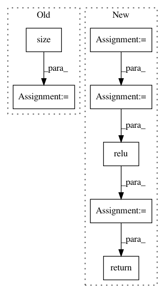

4e43734dd0b7f1c026069af64151a8f52f41060d,torch_geometric/nn/conv/gat_conv.py,GATConv,forward,#GATConv#Any#Any#,86
Before Change
def forward(self, x, edge_index):
edge_index, _ = remove_self_loops(edge_index)
edge_index, _ = add_self_loops(edge_index, num_nodes=x.size(0))
x = torch.mm(x, self.weight).view(-1, self.heads, self.out_channels)
return self.propagate(edge_index, x=x, num_nodes=x.size(0))
After Change
[\mathbf{\Theta}\mathbf{x}_i \, \Vert \, \mathbf{\Theta}\mathbf{x}_j]
\right)\right)}
{\sum_{k \in \mathcal{N}(i) \cup \{ i \}}
\exp\left(\mathrm{LeakyReLU}\left(\mathbf{a}^{\top}
[\mathbf{\Theta}\mathbf{x}_i \, \Vert \, \mathbf{\Theta}\mathbf{x}_k]
\right)\right)}.
Args:
in_channels (int): Size of each input sample.
out_channels (int): Size of each output sample.
heads (int, optional): Number of multi-head-attentions.
(default: :obj:`1`)
concat (bool, optional): If set to :obj:`False`, the multi-head
attentions are averaged instead of concatenated.
In pattern: SUPERPATTERN
Frequency: 3
Non-data size: 7
Instances
Project Name: rusty1s/pytorch_geometric
Commit Name: 4e43734dd0b7f1c026069af64151a8f52f41060d
Time: 2019-07-03
Author: matthias.fey@tu-dortmund.de
File Name: torch_geometric/nn/conv/gat_conv.py
Class Name: GATConv
Method Name: forward
Project Name: KaiyangZhou/deep-person-reid
Commit Name: 710b9ac1a28d418bddc41aeeda320ab4de4d17fe
Time: 2018-10-26
Author: k.zhou@qmul.ac.uk
File Name: torchreid/models/resnet.py
Class Name: ResNet101
Method Name: forward
Project Name: maciejkula/spotlight
Commit Name: 70e4d7fe60a9658bb27b9f5fb67592a1222b2ec3
Time: 2017-07-06
Author: maciej.kula@gmail.com
File Name: spotlight/sequence/representations.py
Class Name: CNNNet
Method Name: user_representation